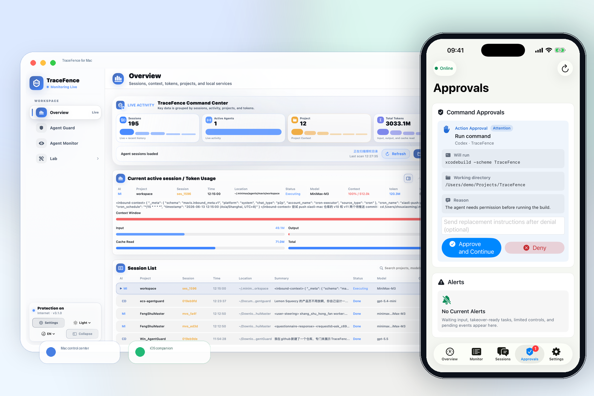

●
Local-first Mac + iPhone control
本地优先的 Mac + iPhone 控制
Control your Mac AI agents from iPhone.
用 iPhone 控制 Mac 上的 AI Agent。
Approve requests, launch or resume sessions, interrupt unsafe runs, and supervise Codex, Claude Code, Cursor, Gemini CLI, and other supported agents over a network you control.
通过你自己的网络审批请求、启动或继续会话、中断危险运行，并管理 Codex、Claude Code、Cursor、Gemini CLI 等受支持的 Agent。
Download Mac build
下载 Mac 本地版
Join iOS TestFlight
加入 iOS TestFlight
View Standard pricing
查看 Standard 价格

One control loop一个完整控制闭环
- Approve or deny supported agent requests from iPhone在 iPhone 上批准或拒绝受支持的 Agent 请求
- Launch, relaunch, interrupt, resume, or terminate when available在能力可用时启动、重启、中断、继续或终止会话
- Review session context, TokenScope usage, and local audit events查看会话上下文、TokenScope 用量和本地审计事件
Your network, no TraceFence relay你的网络，不经过 TraceFence 中转
TraceFence Sentinel connects directly to the paired Mac over LAN, Tailscale, VPN, or another tunnel you operate.TraceFence Sentinel 通过局域网、Tailscale、VPN 或你自己的隧道直连配对 Mac。
LAN
Tailscale
VPN
Local-first
Supported agent families支持的 Agent 家族
Codex
Claude Code
Cursor Agent
Gemini CLI
Grok CLI
Qwen Code
OpenCode
MiniMax Code
OpenClaw
Control depth depends on the local CLI, hook, and adapter. Display-only integrations remain read-only.具体控制能力取决于本机 CLI、hook 和 adapter；仅可读取的集成会保持只读。